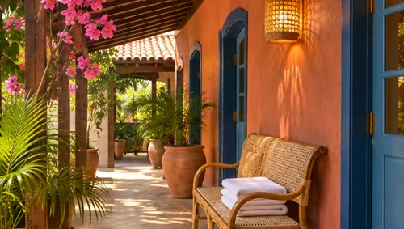
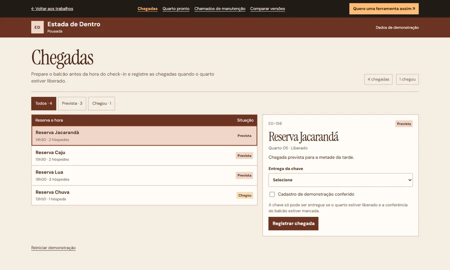
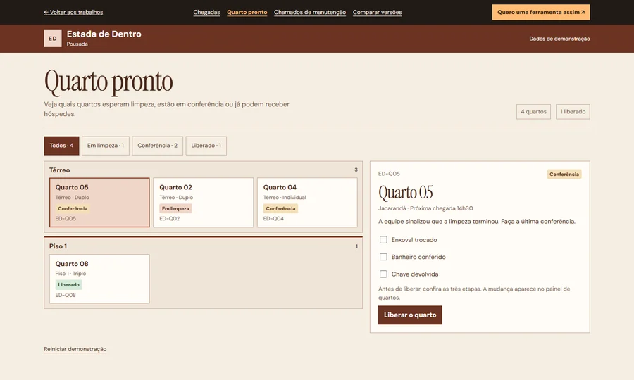
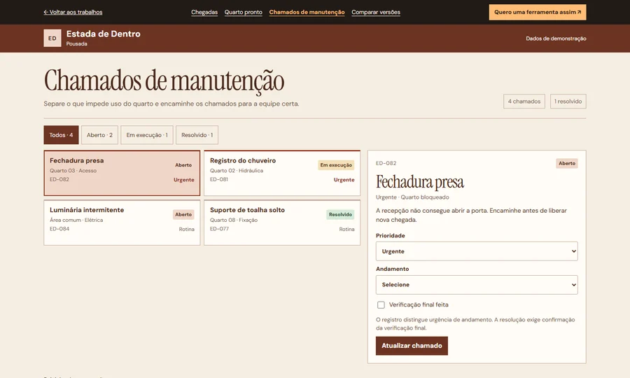

Antecipe a fila de chegadas, acompanhe a virada dos quartos e encaminhe chamados da operação.


Prepare o balcão antes da hora do check-in e registre as chegadas quando o quarto estiver liberado.

Veja quais quartos esperam limpeza, estão em conferência ou já podem receber hóspedes.

Separe o que impede uso do quarto e encaminhe os chamados para a equipe certa.